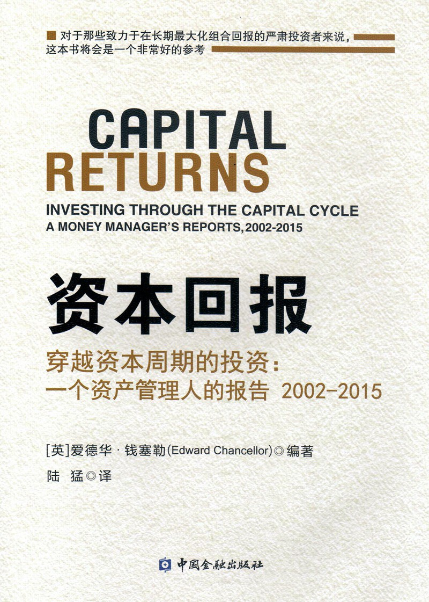

2015年，帕尔格雷夫·麦克米伦（Palgrave Macmillan）出版了《资本回报》，编者爱德华·钱斯勒（Edward Chancellor）是《金融投机史》（Devil Take the Hindmost）的作者，曾供职于GMO资产配置团队，长期为《金融时报》《华尔街日报》和路透Breakingviews撰稿，并获乔治·波尔克财经报道奖（George Polk Award）。这是他为马拉松资产管理（Marathon Asset Management）编纂的第二本信件集——上一本《资本账户》收录了马拉松1993年至2002年间的报告，覆盖科技股泡沫；《资本回报》接续时间线，从2002年至2015年间的客户信中选出60封。马拉松由尼尔·奥斯特勒（Neil Ostrer）、比尔·亚拉（Bill Arah）和杰里米·霍斯金（Jeremy Hosking）于1986年在伦敦创立，管理规模一度超过500亿美元，是"资本周期"投资法最主要的实践者。2017年，中国金融出版社推出陆猛翻译的简体中文版，正式书名为《资本回报：穿越资本周期的投资——一个资产管理人的报告2002—2015》，ISBN为978-7-5049-8908-6；这套中文版正文共计207页，目录把报告分入投资哲学、泡沫与危机、管理层和资本配置等主题。
书的核心论点很朴素：高回报会吸引资本涌入，资本涌入带来产能扩张和竞争加剧，最终把回报拉低；而回报低迷、行业遭资本抛弃的地方，反而会因供给收缩孕育出下一轮好收成。钱斯勒在导言中写道，多数分析师"过度关注产出需求的增长，而非产出本身的增长"（Analysts tend to focus excessively on the growth of demand for output rather than on the growth of the output itself）——真正决定行业回报走向的是供给端的资本纪律，而非需求端的乐观预期。全书按主题分章：有的聚焦资本周期典型行业，如汽车、大宗商品、鳕鱼捕捞、啤酒和石油；有的讨论资本配置纪律突出的成长型公司，如高露洁（Colgate）、亚马逊、Rightmove和百度；还有专章分析管理层与资本周期的关系，涉及历峰（Richemont）、瑞典商业银行（Handelsbanken）等家族或长期主义色彩浓厚的企业；危机部分复盘了英爱银行（Anglo Irish Bank）、CDO与资产证券化、西班牙地产泡沫、德国银行业和北岩银行（Northern Rock）的崩溃过程，以及危机后的资本出清与复苏。
美国财务分析师、《投资者宣言》作者威廉·伯恩斯坦（William J. Bernstein）在《金融分析师杂志》（Financial Analysts Journal）的书评中说，钱斯勒开篇几十页对资本周期理论的阐述"本身就值得这本书的定价"（Chancellor's gemlike exposition of the concept in the first few dozen pages...is by itself worth the price），但后面各章由马拉松分析师撰写的具体报告水准参差，部分偏重会计细节。伯恩斯坦摘录了书中对管理层的警示："一位穿着昂贵鞋子或考究西装的工业公司CEO，更可能乐于与投资银行家高谈阔论，而不是花时间跑工厂、见客户"（A CEO who wears expensive shoes, or a snappy suit, is more likely to enjoy the...company of investment bankers than spend his time visiting factories and customers）。书中还有一句常被引用的话，把过度乐观的投资者称作"资本主义的慈善家"（capitalism's philanthropists）——他们把钱投进宏大却难以盈利的计划，让社会受益，自己却颗粒无收。
这本书没有提供选股公式，提供的是一套追问方式：一个行业当下的产能是在扩张还是收缩？管理层过去是把利润再投资进本行业，还是分给股东、用于回购？书中关于英爱银行、北岩银行、西班牙地产与大宗商品的报告写于危机爆发前后，保留了判断形成时的信息边界，而不是事后把结果包装成必然。习惯从需求侧讲成长故事的投资者，会在这里得到一个供给端的对照面：当所有人都在同一个行业加码投资时，回报容易被新增产能摊薄；当价格低迷迫使弱者退出、资本开支下降，幸存企业才可能重新获得定价权。